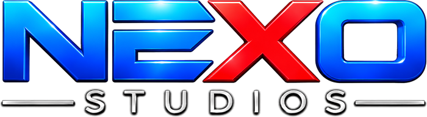

01 / 12

Propuesta de producción · Streaming y podcast
Café con Pips, desde Nexo.
Estudio, técnica y equipo de producción en un mismo lugar. El programa sale en vivo, queda grabado y se corta para redes sin salir de la casa.
Café con PipsNexo Studios · San Martín
02 / 12
La propuesta
Un módulo fijo y el resto, a elección.
El corazón es el streaming del programa. Alrededor, cinco módulos que se suman según la etapa y el presupuesto: la versión podcast, la gráfica en vivo, la edición, los clips y la identidad.
01 · Streaming del programaDos horas de estudio con técnica, en vivo y grabado. Por episodio.
02 · Versión podcast (opcional)El mismo episodio, editado en audio y listo para Spotify y YouTube Music.
03 · Gráfica en vivoMosca, zócalos, placas y oversize, operados durante el programa.
04 · Edición del episodioAjustes de montaje, gráficas y material de apoyo sobre el máster.
05 · Clips verticalesLos mejores momentos para Instagram, TikTok y Shorts.
06 · Identidad visualLogo, paleta, tipografías y manual digital del programa.
La propuestaCafé con Pips
03 / 12
El estudio
Tres sectores en un mismo piso.
Un estudio acondicionado acústicamente en San Martín, con equipo técnico permanente.
ConducciónEscritorio de listones para hasta seis personas al aire. El formato natural para un streaming de mesa.
EntrevistasDos sillones y mesa baja contra la cortina. Para un formato podcast más íntimo.
Live setSector para música en vivo, si el programa quiere sumar un momento musical.
Equipamiento
- 5 cámaras: 3 PTZ 4K OpterCam GA5500N + 2 Insta360 Link 2C Pro
- 6 micrófonos Shure MV7+, uno por persona
- Rodecaster Pro II con audio multipista por canal y mesa Behringer X2442 de 24 canales
- Switching con Elgato Stream Deck XL e in-ears Shure SE215 con talkback
- Iluminación E-Image EL-1152 y Par LED RGB
El estudioCafé con Pips
04 / 12
Cómo rinde
Una grabación, cuatro salidas.
El programa no se graba una vez para un solo lugar. Con la misma sesión salen cuatro piezas, cada una para su audiencia.
01
El vivoStreaming con chat abierto, donde el programa arma comunidad.02
El episodioQueda publicado y sigue sumando vistas semanas después.03
Los clipsLos verticales llevan el programa a gente que todavía no lo vio.04
El podcastLa versión en audio, para escuchar manejando o entrenando.
Producción ya piensa los clips mientras se graba: los momentos se marcan en el piso, no después.
Cómo rindeCafé con Pips
05 / 12
Módulo 01
Streaming del programa
El estudio, la técnica y el vivo.
Dos horas de estudio por episodio, con realización multicámara y operación técnica en el piso.
- 2 horas de estudio en el sector conducción
- Realización multicámara con 5 cámaras y switching en vivo
- Un micrófono por persona y audio multipista por canal
- Operador técnico y asistente durante toda la jornada
- In-ear y talkback para la conducción
- Grabación del programa completo en Full HD
Con producción se suma el equipo de producción de Nexo: un productor general y un productor de piso. Siguen la rutina, manejan los tiempos al aire, coordinan invitados y deciden en el momento si algo no funciona.
Por episodio · 2 h
Solo técnica$300.000
Técnica + equipo de producción$360.000
Módulo 01Entregable: máster Full HD
06 / 12
Módulo 02 · Opcional
Versión podcast
El mismo episodio, en audio.
Cada voz se graba en su propio canal, así la versión en audio sale limpia sin regrabar nada.
- Edición y limpieza de cada voz desde la grabación multipista
- Nivelación y mezcla final del episodio
- Cortina de entrada y salida
- Exportación lista para Spotify, Apple Podcasts y YouTube Music
Si el programa quiere episodios solo de podcast, se graban en el sector entrevistas, con sillones y un clima más íntimo. Se cotiza con las mismas horas de estudio del módulo 01.
Por episodio
Edición y mezcla de audio$90.000
Módulo 02Entregable: episodio en audio
07 / 12
Módulo 03
Gráfica en vivo
Diseñada y operada por el mismo equipo.
El paquete gráfico se arma con la identidad del programa y se opera en vivo desde el Stream Deck, sin depender de nadie de afuera.
- Mosca con el logo del programa
- Zócalos para cada conductor e invitado
- Oversize para el tema de cada bloque
- Placas «Ya comenzamos», «Ya volvemos» y «Gracias por ver»
- Fondos y composiciones para varias cámaras en pantalla
- Versión en PNG transparente de cada pieza, para usar también en redes
Si el programa tiene un segmento fijo, se le puede armar su propia placa interactiva: una pantalla que producción completa en el momento, como hacemos en los programas de la casa.
Pago único
Paquete gráfico completo$300.000
Módulo 03Entregable: paquete gráfico
08 / 12
Módulo 04
Edición del episodio
El programa, listo para publicar.
Sobre el máster grabado en el estudio: se corrige lo que hay que corregir y se suma lo que hace falta.
- Revisión del montaje y corrección de cortes
- Eliminación de segmentos
- Incorporación de videos, imágenes y material de apoyo
- Placas, overlays y gráfica del programa
- Ajuste de audio y ritmo general
- Exportación, miniatura y carga en la plataforma
Las indicaciones de edición las puede pasar el programa con timecodes, o las arma la producción de Nexo, que estuvo en el piso durante la grabación.
Por episodio · 2 h de programa
Edición sobre máster Full HD$250.000
Módulo 04Entregable: episodio editado Full HD
09 / 12
Módulo 05
Clips verticales
Los mejores momentos, en 9:16.
Cada clip se edita por separado, con el ritmo y el formato que piden Instagram, TikTok y YouTube Shorts. Se trabaja en paquetes de 15 o 20 clips por programa.
- Selección de los momentos: los marca producción durante la grabación, o los elige el programa
- Reencuadre a formato vertical
- Subtítulos
- Placas y elementos gráficos del programa
- Ajuste de imagen y audio para redes
Por programa · $15.000 por clip
Paquete de 15 clips$225.000
Paquete de 20 clips$300.000
Módulo 05Entregable: clips 9:16
10 / 12
Módulo 06 · Opcional
Identidad visual
Para que el programa se reconozca.
La imagen de Café con Pips, pensada desde el primer día para la pantalla, las redes y el merch.
- Diseño de logotipo
- Paleta de colores y tipografías
- Manual de marca para aplicaciones digitales
- Lineamientos para merch y otras aplicaciones
Si el formato todavía no está cerrado, Nexo también ofrece producción creativa: concepto, guion y rutina de cada emisión, y plan de redes. Se cotiza por proyecto.
Pago único
Identidad y manual digital$350.000
Módulo 06Entregable: manual de marca
11 / 12
Presupuesto
Todo, de un vistazo.
| Módulo | Modalidad | Valor |
|---|
| 01 · Streaming del programa2 h, solo técnica | Por episodio | $300.000 |
| 01 · Streaming del programa2 h, técnica + productor general y de piso | Por episodio | $360.000 |
| 02 · Versión podcastOpcional | Por episodio | $90.000 |
| 03 · Gráfica en vivo | Pago único | $300.000 |
| 04 · Edición del episodio2 h de programa, sobre máster Full HD | Por episodio | $250.000 |
| 05 · Clips verticales$15.000 por clip · paquete de 15 / 20 | Por programa | $225.000
$300.000 |
| 06 · Identidad visualOpcional | Pago único | $350.000 |
| Hora extra de estudioTécnica / con producción | Por hora | $150.000
$180.000 |
Un episodio completo
Streaming con producción + edición del episodio + 15 clips verticales.
$835.000
PresupuestoValores en pesos argentinos
12 / 12
Condiciones
Letra chica, en grande.
- Jornada mínima: dos horas de estudio.
- Reserva: seña del 50 % para tomar la fecha. El saldo, contra entrega del material.
- Cancelación: con menos de 48 horas de aviso, la seña no se devuelve.
- Horario: la hora empieza a la hora agendada. Noches, feriados y fines de semana se cotizan aparte.
- Validez: quince días corridos desde el envío de esta propuesta.
- Temporada: para un ciclo de varios episodios se arma un acuerdo con precio por temporada.
Nexo StudiosHistorias que conectan